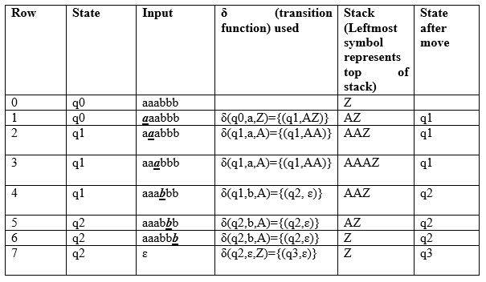
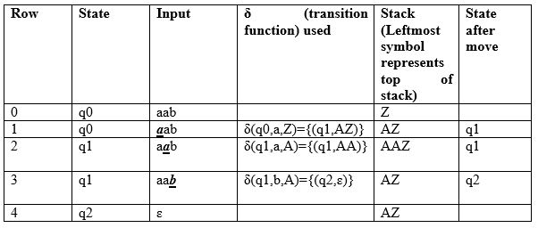
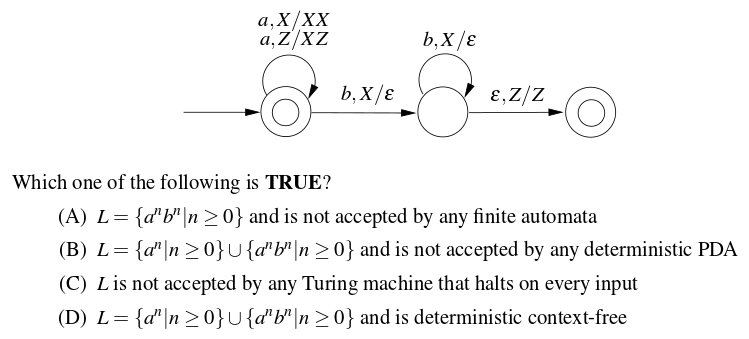
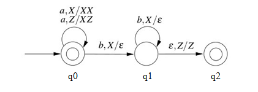

We have discussed Pushdown Automata (PDA) and its acceptance by empty stack article. Now, in this article, we will discuss how PDA can accept a CFL based on final state. Given a PDA P as:
P = (Q, Σ, Γ, δ, q0, Z, F)
The language accepted by P is the set of all strings consuming which PDA can move from initial state to final state irrespective to any symbol left on the stack which can be depicted as:
L(P) = {w |(q0, w, Z) =>(qf, ɛ, s)}
Here, from start state q0 and stack symbol Z, final state qf ɛ F is reached when input w is consumed. The stack can contain string s which is irrelevant as final state is reached and w will be accepted.
Example: Define the pushdown automata for language {a^nb^n | n > 0} using final state.
Solution: M = where Q = {q0, q1, q2, q3} and ∑ = {a, b} and Γ = { A, Z } and F={q3} and δ is given by:
δ( q0, a, Z ) = { ( q1, AZ ) }
δ( q1, a, A) = { ( q1, AA ) }
δ( q1, b, A) = { ( q2, ɛ) }
δ( q2, b, A) = { ( q2, ɛ) }
δ( q2, ɛ, Z) = { ( q3, Z) }
Let us see how this automata works for aaabbb:

Explanation: Initially, the state of automata is q0 and symbol on stack is Z and the input is aaabbb as shown in row 0. On reading a (shown in bold in row 1), the state will be changed to q1 and it will push symbol A on stack. On next a (shown in row 2), it will push another symbol A on stack and remain in state q1. After reading 3 a’s, the stack will be AAAZ with A on the top.
After reading b (as shown in row 4), it will pop A and move to state q2 and stack will be AAZ. When all b’s are read, the state will be q2 and stack will be Z. In row 7, on input symbol ɛ and Z on stack, it will move to q3. As final state q3 has been reached after processing input, the string will be accepted.
This type of acceptance is known as acceptance by final state.
Next we will see how this automata works for aab:

As we can see in row 4, the input has been processed and PDA is in state q2 which is non-final state, the string aab will not be accepted.
Let us discuss question based on this:
Que-1. Consider the transition diagram of a PDA given below with input alphabet ∑ = {a, b}and stack alphabet Γ = {X, Z}. Z is the initial stack symbol. Let L denote the language accepted by the PDA. (GATE-CS-2016)

Solution: We first label the state of given PDA as:

Next, the given PDA P can be written as:
Q = {q0, q1, q2} and ∑ = {a, b}
And Γ = {A, Z} and F={q0,q2} and δ is given by :
δ( q0, a, Z ) = {( q0, XZ)}
δ( q0, a, X) = {( q0, XX )}
δ( q0, b, X) = {( q1, ɛ)}
δ( q1, b, X) = {( q1, ɛ)}
δ( q1, ɛ, Z) = {( q2, Z)}
As we can see, q0 is initial as well as final state, ɛ will be accepted. For every a, X is pushed onto stack and PDA remains in final state. Therefore, any number of a’s can be accepted by PDA.
If input contains b, X is popped from stack for every b. Then PDA is moved to final state if stack becomes empty after processing input (δ( q1, ɛ, Z) = {( q2, Z)}). Therefore, number of b must be equal to number of b if they exist.
As there is only one move for a given state and input, the PDA is deterministic. So, correct option is (D).